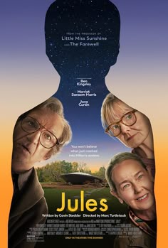

An action movie is a film genre focused on intense physical activity, including fight scenes, chases, explosions, and high-stakes situations. These movies often center around a hero or protagonist facing dangerous challenges, battling antagonists, or saving the day through daring feats and quick decision-making. The primary goal is to entertain with excitement, adrenaline, and thrills.


A comedy movie is a film designed to entertain and make the audience laugh. It typically features humorous situations, exaggerated characters, and witty dialogue. The plot often involves lighthearted conflicts or misunderstandings, leading to funny outcomes.
A drama movie focuses on serious, emotional stories that explore human relationships, personal struggles, and complex situations. It often deals with deep themes, such as love, loss, or conflict, and aims to evoke strong emotions from the audience.
A horror movie is designed to evoke fear and suspense. It often features terrifying creatures, supernatural events, or psychological tension, aiming to create a sense of dread or shock through eerie atmospheres and thrilling situations.
A suspense movie keeps the audience on the edge of their seat, building tension and uncertainty. It often involves a mystery or dangerous situation, where the outcome is unknown, and the story keeps viewers guessing until the very end.
Click here to View reference
Go to about us